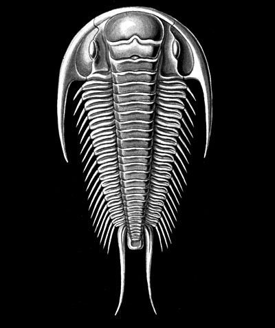
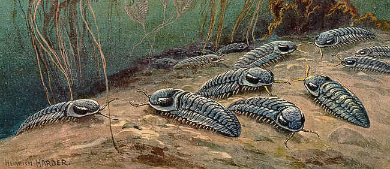

Bienvenido sea el lector a esta página web donde estaremos aprendiendo
sobre las características, el comportamiento, la vida y la muerte de los trilobites,
artrópodos extintos icónicos del Paleozoico.
Espero le sea de utilidad y agrado.
